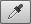
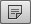
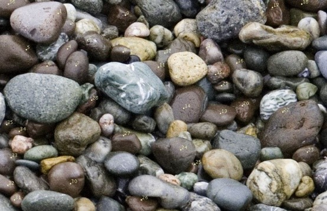

-
Eyedropper tool Category: Measuring Tools
The eyedropper tool can be used to sample pixel color values from any open image window and make the sampled color the new foreground color.
-
Color sampler tool

The color sampler tool works in the same way as the eyedropper tool, except it creates persistent pixel value readouts that are displayed in the Info panel and is capable of displaying up to four color sample point readouts in an image.
-
Ruler toolCategory: Measuring Tools

The ruler tool lets you measure distances and angles in an image. To draw a measuring line, make sure the Info panel and/or ruler tool options bar are visible and click and drag with the ruler tool in an image document window.
-
Note tool 
You can use the note tool to add text notes to a file in Photoshop. Documents that are annotated in this way can be saved in the Photoshop (PSD), PDF or TIFF formats.
Category: Measuring Tools -
Count tool

You can use the note tool to add text notes to a file in Photoshop. Documents that are annotated in this way can be saved in the Photoshop (PSD), PDF or TIFF formats.
 Category: Measuring Tools